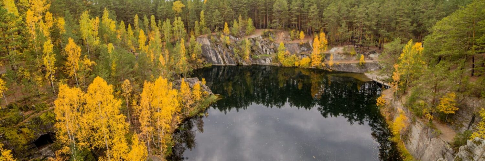
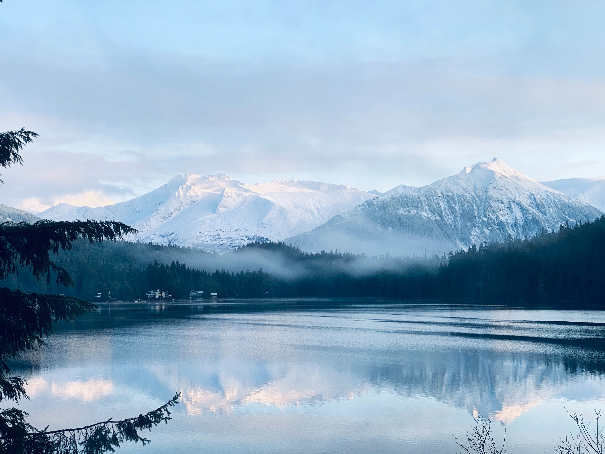

Компания Ocean Cleanup очистит реки от 2,7 млн
тонн пластика и спасёт океаны от загрязнения.

Компания Ocean Cleanup разработала автономное судно Interceptor,
которое вылавливает мусор из рек до того, как он попадаёт в моря и океаны.
Цель — оснастить такими устройствами 1000 самых загрязнённых рек в мире.
Учёные реконструировали изменения
природы доисторического Северного Урала

Ученые Уральского федерального университета и Института экологии растений
и животных УрО РАН рассказали, какие виды животных вымерли на Среднем Урале
в результате глобальной экологической катастрофы на рубеже плейстоцена и голоцена
(около 10 тыс. лет назад). Статью с изложением систематизированных данных палеонтологи
опубликовали в журнале Quaternary International.
8 невероятных природных явлений.

Природа загадочна и непредсказуема и часто оставляет нас с открытым ртом при
виде необъяснимых проявлений ее силы. Хотя вы можете подумать, что движущиеся камни
и кроваво-красный дождь — это какая-то шутка или чудесное явление, у науки есть объяснение
(почти) всему.
Дикая природа поселилась в Вологде.

Выставка фоторабот «Самая красивая страна» работает в Доме Корбакова. Снимки собраны
в рамках одноименного конкурса фотографии Русского географического общества. В этом году
конкурс «Самая красивая страна» проходит в 9 раз и принять в нем участие может любой желающий
независимо от места жительства и возраста. На выставке представлены самые удивительные снимки
дикой природы.
В Канаде появится новый морской заповедник.

Власти Канады и правительство провинции Британская Колумбия одобрили создание нового морского
заповедника. Он будет находиться в биорегионе Северного шельфа, протянувшегося от реки Кэмпбелл до
границы с Аляской.